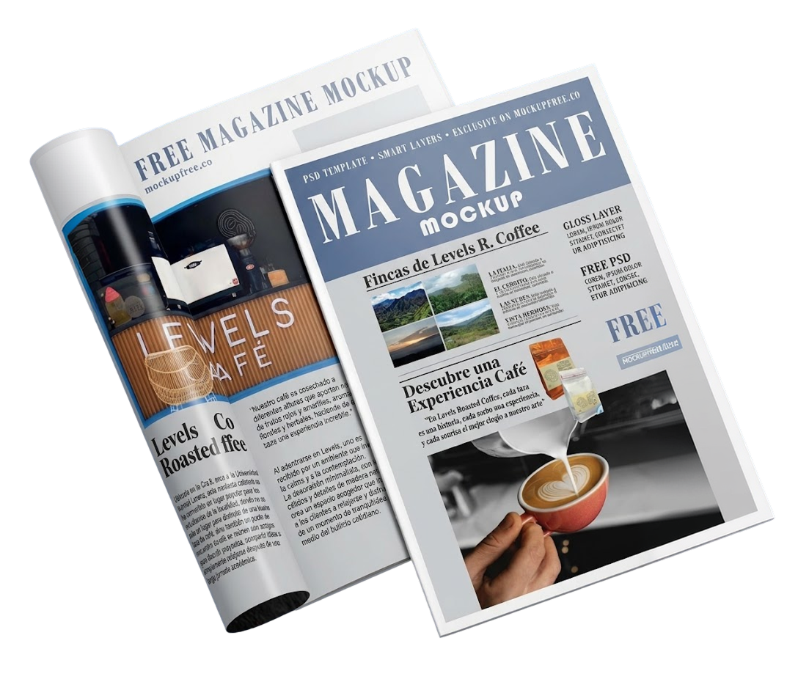
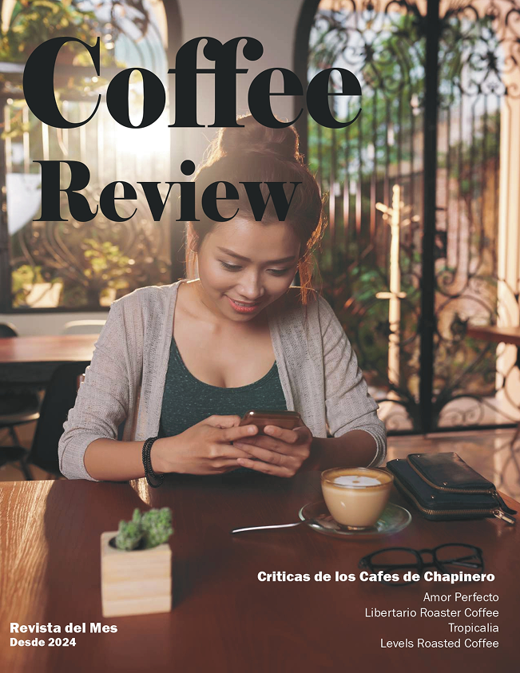

CoffeeMagazineDesign
An editorial magazine celebrating Chapinero's best coffee shops, their flavors, stories, and cozy atmosphere.
InDesign
Pdf

Coloca aquí una imagenassets/proyectos/coffeemag-devices.png
Project images

Coloca aquí las 6 imágenesassets/proyectos/coffeemag-1.png … coffeemag-6.png
An editorial project that celebrates the love for coffee and the spaces that surround it. This magazine is a tour of Chapinero's most beloved coffee shops, highlighting their flavors, stories, and cozy corners.
With a clean and visually appealing design, it seeks to convey the essence of each place, like Levels Roasted Coffee, where each cup tells a story.
Fonts & Colors
Main font
Montserrat
Bold
Aa
ABCDEFGHIJKLM
NOPQRSTUVWXYZ
NOPQRSTUVWXYZ
Secondary fonts
Medium
Aa
ABCDEFGHIJKLM
NOPQRSTUVWXYZ
NOPQRSTUVWXYZ
Regular
Aa
ABCDEFGHIJKLM
NOPQRSTUVWXYZ
NOPQRSTUVWXYZ
#69A3CE
#8090A6
#A67153
#BF5349
#0D0D0D